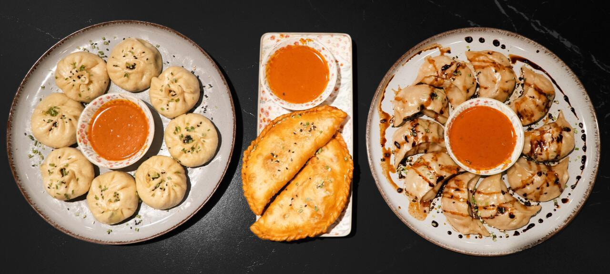

Täglich handgemacht
Jede Portion wird frisch vorbereitet und nicht vorproduziert.
So schmeckt Tibet – von unserer Familie zu deinem Teller.
📍 Zentrum Regensdorf | ⏰ Di–Sa 11–20 Uhr
 ★ 5.0/5 basierend auf 100+ Google-Bewertungen
★ 5.0/5 basierend auf 100+ Google-Bewertungen
Frisch, schnell und klar kalkulierbar: authentische Momos ohne lange Wartezeit.
Jede Portion wird frisch vorbereitet und nicht vorproduziert.
Konstanter Geschmack wie in Tibet, ohne wechselnde Qualität.
Bestellen per WhatsApp, Zeit wählen, pünktlich abholen.
Wenige starke Optionen statt überladener Karte.
Wir sind eine tibetische Familie, die ihre Wurzeln im Himalaya hat und heute mit viel Liebe und Dankbarkeit in der Schweiz lebt. Mitgebracht haben wir nicht nur unsere Sprache und Kultur, sondern vor allem die Rezepte, mit denen wir selbst aufgewachsen sind.
In unserem kleinen Take Away kochen wir so, wie wir es von zuhause kennen: mit frischen Zutaten, traditionellen Gewürzen und ganz viel Herz. Unsere Spezialität heisst Lamu Momo – handgemachte Teigtaschen nach original tibetischer Art. Ob vegetarisch oder mit Fleisch – jede Portion erzählt ein Stück unserer Geschichte.
Für uns ist das Kochen nicht nur ein Beruf, sondern ein Teil unseres Lebens. Wir freuen uns, diese Leidenschaft mit Ihnen zu teilen – und vielleicht ein bisschen tibetisches Gefühl in Ihren Alltag zu bringen.
Schön, dass Sie da sind. Willkommen bei Lamu Momo.

Geniessen Sie unsere hausgemachten Momos auch zu Hause! Bestellen Sie gefrorene Momos und bereiten Sie sie nach Belieben zu – perfekt für einen gemütlichen Abend oder spontane Gäste.
Unsere Spezialservices bieten wir nach individueller Absprache an. Bitte kontaktieren Sie uns rechtzeitig, damit wir gemeinsam planen können.
Ob kleine Feier oder grosse Runde – wir liefern frisch zubereitete Momos und tibetische Spezialitäten für Ihre Gäste.
Verwöhnen Sie Ihr Team oder Ihre Kundschaft mit authentischer tibetischer Küche – ideal für Meetings, Feiern oder Teamlunch.
Wir machen Ihren Geburtstag besonders – mit individuell zusammengestellten Gerichten und zuverlässigem Service.
Ein vielfältiges Buffet mit vegetarischen und fleischhaltigen Gerichten – perfekt zum Entdecken der tibetischen Küche.
"Was diesen Ort besonders macht, ist nicht nur das Essen, sondern auch die herzliche Atmosphäre."
"Das Fleisch ist extrem Saftig, perfekt balancierte Sauce, der Sesam und Schnittlauch runden das ganze nochmals auf! Der Besitzer ist sehr sehr freundlich und lustig."
"Die besten Momos die ich je hatte, wahnsinnig lecker, frisch gemacht und nun bin ich süchtig. Unglaublich nette Familie und der Preis unschlagbar. Wer hier nicht mindestens einmal bestellt, hat was verpasst!"
"Tastiest momo i have ever eaten in my life.just fabulous lookin and so tasty that it burst in my mouth.I'll give it a 5 star but in reality I think that it deserves a 6 star.❤️❤️❤️"
"Sehr nette leute, das essen punktet durch schmeckbare qualität und frische. Preisleistung garantiert ! Wer in regensdorf ist und nicht hier momos isst verpasst was."
"Ich esse Momos seit meiner Kindheit. Seitdem ich in die Schweiz gezogen bin, habe ich noch nie so feine und authentische Momo gegessen."
Am schnellsten per WhatsApp. Einfach Anzahl und Sorte schicken, dann Abholzeit bestätigen.
Aktuell liegt der Fokus auf Abholung vor Ort. So bleibt die Qualität beim Servieren am besten.
Je nach Auslastung meist kurz. Bei Vorbestellung ist deine Abholzeit fix eingeplant.
Ja. Es gibt vegetarische Momos mit klar ausgewiesenen Zutaten.
Grundsätzlich ausgewogen. Scharfe Sauce kannst du je nach Geschmack dazu bestellen.
Im Zentrum Regensdorf. Öffnungszeiten: Dienstag bis Samstag, 11:00 bis 20:00 Uhr.
Original tibetische Momos, täglich handgemacht und schnell zur Abholung bereit.